Welcome!
description: Introduction to EOCV-Sim
Welcome!
Introduction
Thank you for your interest in EOCV-Sim! (EasyOpenCV Simulator)
We made this tool in hopes that it will be useful for all FTC teams seeking a way of learning and developing their seasonal OpenCV algorithms in an easy and straightforward way, while also providing some extra tools to improve the experience of developing such algorithms.
The main purpose of this software is to simulate the package & class structure of OpenFTC’s EasyOpenCV and a little bit of the FTC SDK, while also providing OpenCV functionality and a simple GUI.
By simulating the aforementioned structure, it allows the imports, class names, etc. to be the same as they would be if you were using the FTC SDK with EasyOpenCV, allowing you to simply copy and paste your vision code into your Android Studio project once you want to transfer it to a robot.
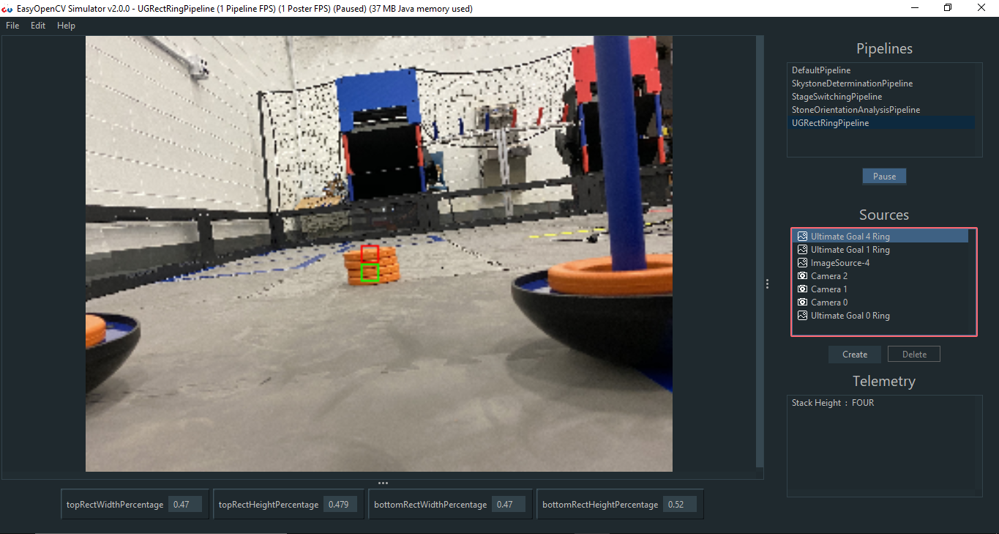
While the main focus of this software is the FIRST Tech Challenge competition, nothing stops you from using it to solve any sort of general purpose computer vision problem :). We highly encourage people to use it as a learning tool outside of FTC, for any sort of project.
We are also welcome to suggestions if you see anything that could be added or improved! GitHub Issues are open to suggestions and bug reports.
Buy me a coffee
For the past 4 years I’ve been developing and maintaining learning tools for robotics kids to have a better understanding of programming and computer vision. Now that I’ve graduated from the robotics competition and I’m headed to college it is my goal to keep maintaining and improving these tools for future generations to keep learning, completely cost-free and open source. Your donation in buy me a coffee will help me maintain those goals through the following years as life gets busier.
- Sebastian Erives, deltacv’s main dev
Downloading EOCV-Sim
1. Download and install the Java Runtime Environment or Java Development Kit if you haven’t already:
EOCV-Sim requires Java 11 at minimum. Any newer version should work fine. You can download it from the Oracle webpage.
2. Click on this link to go to the latest release in the EOCV-Sim GitHub repo.
3. Download the jar file, named EOCV-Sim-X.X.X-all.jar, available at the bottom on the “assets” section:
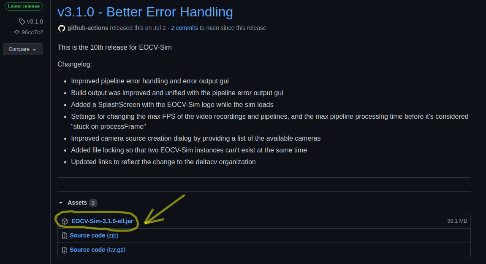
(Note that the screenshot might not be what is actually displayed when you open the page, as new releases come out. The EOCV-Sim-all artifact shall always be available to download from any release)
Running EOCV-Sim
Once the jar file is downloaded, you can simply double-click it to run it, just like any other executable file.
You can also run the jar file from the command line.
Navigate to the folder where the EOCV-Sim jar is stored in, using the cd command. Then, invoke the java command passing the file name as follows:
java -jar "EOCV-Sim-X.X.X-all.jar"
Replacing the X.X.X by the version respectively, e.g 3.1.0
Interested in PaperVision? Click here to go back to the documentation page.
OpenCV and EasyOpenCV
What is OpenCV?
OpenCV is known as a library containing multiple programming functions that are aimed at real-time computer vision.
The library has more than 2500 optimized algorithms, which includes a comprehensive set of both classic and state-of-the-art computer vision and machine learning algorithms.
These algorithms can be used to detect and recognize faces, identify objects, classify human actions in videos, track camera movements, track moving objects, extract 3D models of objects, produce 3D point clouds from stereo cameras, stitch images together to produce a high resolution image of an entire scene, find similar images from an image database, remove red eyes from images taken using flash, follow eye movements, recognize scenery and establish markers to overlay it with augmented reality, and more.
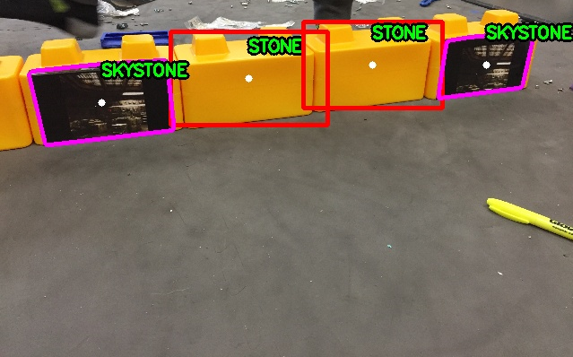
So… How do I integrate it to FTC?
The folks from OpenFTC developed a library to accomplish this in a very simple way, hiding the underlying complexities into a nice API.
EasyOpenCV is a library that integrates OpenCV into the FTC SDK in a straightforward manner, providing the complete OpenCV Java library, plus multiple interfaces that give ease of access to internal phone cameras, or external webcams, and to be able to easily feed images from the real world to your OpenCV algorithm.
Here we have an example of the EasyOpenCV API, for using the internal camera of a phone to take images and send them into an OpenCvPipeline algorithm, and it can easily be applied to a webcam too.
EasyOpenCV Pipelines
What is a pipeline?
A pipeline is essentially an encapsulation of OpenCV image processing to do a certain thing. Most of the time, image processing requires operations to be done in series instead of in parallel; outputs from step A are fed into the inputs of step B, and outputs of step B are fed into step C, and so on. Hence, the term “Pipeline”. (definition extracted from theEasyOpenCV docs)
EasyOpenCV implements this idea by using an abstract OpenCvPipeline class, from which you will extend when making your own pipeline. For example, here we have a pipeline that doesn’t do any processing with the input image:
import org.opencv.core.Mat;
import org.openftc.easyopencv.OpenCvPipeline;
public class EmptyPipeline extends OpenCvPipeline {
@Override
public Mat processFrame(Mat input) {
return input;
}
}
The processFrame function that comes from the extended OpenCvPipeline class always needs to be overridden, and it is where all your vision processing magic will happen. This function will be called when a new frame is dispatched from the camera (or from a static image or a video file, in the case of EOCV-Sim).
An OpenCV Mat is simply a matrix that contains any type of data, which for our purposes will be an image most of the time, and they are the base for OpenCV image processing.
The Mat returned from processFrame function will be displayed on the live viewport. Since we are directly returning the input mat in the code before, the image coming from the camera will be displayed exactly as it is.
The most simple processing that can be done in OpenCV is changing an image’s color space to another one. The following pipeline simply takes the input mat and changes its color space to grayscale:
public class GrayPipeline extends OpenCvPipeline {
@Override
public Mat processFrame(Mat input) {
Imgproc.cvtColor(input, input, Imgproc.COLOR_RGBA2GRAY);
return input;
}
}
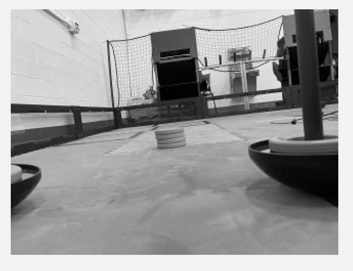
One thing to note here is the conversion code used, Imgproc.COLOR_RGBA2GRAY, which means in a more literal way “convert the input mat,which is in the RGBA color space, to the grayscale space”.
EasyOpenCV ALWAYS inputs RGBA frames to the pipeline (which stands for red, green, blue, alpha channels). This means that whenever you want to convert the input mat to another color space, you always need to specify to convert the mat from the RGBA color space to the desired one.
For example, Imgproc.COLOR_RGBA2RGB (remove the alpha channel), Imgproc.COLOR_RGB2HSV, Imgproc.COLOR_RGB2YCrCb, etc.
Creating and Running a Pipeline
Lifecycle
One of the executable units of EOCV-Sim are OpenCvPipelines, which can be created as explained here. The lifecycle is automatically managed by the sim, calling:
initbefore the firstprocessFrameprocessFrameevery time a new frame is dispatched from an Input SourceonViewportTappedwhen the image displayed on the UI is clicked with the mouse (or tapped if running the pipeline on a phone)
import org.opencv.core.Mat;
import org.openftc.easyopencv.OpenCvPipeline;
public class SamplePipeline extends OpenCvPipeline {
@Override
public void init(Mat input) {
// Executed before the first call to processFrame
}
@Override
public Mat processFrame(Mat input) {
// Executed every time a new frame is dispatched
return input; // Return the image that will be displayed in the viewport
// (In this case the input mat directly)
}
@Override
public void onViewportTapped() {
// Executed when the image display is clicked by the mouse or tapped
// This method is executed from the UI thread, so be careful to not
// perform any sort heavy processing here! Your app might hang otherwise
}
}
You can learn more about pipelines in their respective section.
Adding pipelines to EOCV-Sim
There are two ways for adding your own pipelines:
- Workspaces, which are the fastest and most flexible method of using the sim, since the pipelines are built on-the-fly and changes are applied immediately.
- Building from source, which allows the use of other JVM languages such as Kotlin, but it is slower since you have to rebuild and wait for the sim to open every time you make changes in your pipelines.
Workspaces are the recommended method for development if you use Java. You can use any IDE or text editor for them. We officially support Android Studio (partially), VS Code, and IntelliJ IDEA.
Executing a pipeline
Once you have added a pipeline using any of the methods mentioned before, executing any given pipeline is very simple. Your pipeline should appear in the “Pipelines” list, the first one located on the right section:
 (2).png)
You can simply select the pipeline by clicking it with your mouse, and the life cycle explained before will start in your code.
Notice the gears icon the SamplePipeline has, this means that the pipeline was added using the workspaces method.
As opposed to the DefaultPipeline which has a hammer and a wrench icon, which means that it was added using the Build from Source method.
Introduction to VisionPortal
New for the 2023-2024 season is the VisionPortal interface. A new technology that implements OpenCV vision right into the FTC SDK, making computer vision more accessible and easier to code for FIRST Tech Challenge than ever before. Creating a camera stream with VisionPortal is as easy as writting just a few, concise lines of code;
VisionPortal myVisionPortal;
// Create a VisionPortal, with the specified camera, and assign it to a variable.
myVisionPortal = VisionPortal.easyCreateWithDefaults(hardwareMap.get(WebcamName.class, "Webcam 1"), ...);
Going into more technical details, VisionPortal is a thin API built on top of EasyOpenCV. So, not only is it easier to use, but it also takes advantage of the proven reliability of EasyOpenCV, used by hundreds (or even thousands!) of teams ever since 2019.
We won’t go further in depth on the functionality of VisionPortal for the purposes of this documentation, but it’s highly advised check out ftc-docs for more information about the usage of this API.
VisionProcessor
The VisionProcessor interface was introduced along VisionPortal to mimic the usage of OpenCvPipeline to this new API. If we take a look into the interface, we can notice it is pretty similar in concept:
import android.graphics.Canvas;
import org.firstinspires.ftc.robotcore.internal.camera.calibration.CameraCalibration;
import org.firstinspires.ftc.vision.VisionProcessor;
import org.opencv.core.Mat;
public class SampleProcessor implements VisionProcessor {
@Override
public void init(int width, int height, CameraCalibration calibration) {
// Code executed on the first frame dispatched into this VisionProcessor
}
@Override
public Object processFrame(Mat frame, long captureTimeNanos) {
// Actual computer vision magic will happen here
}
@Override
public void onDrawFrame(Canvas canvas, int onscreenWidth, int onscreenHeight, float scaleBmpPxToCanvasPx, float scaleCanvasDensity, Object userContext) {
// Cool feature: This method is used for drawing annotations onto
// the displayed image, e.g outlining and indicating which objects
// are being detected on the screen, using a GPU and high quality
// graphics Canvas which allow for crisp quality shapes.
}
}
We can attach this processor into a VisionPortal to start dispatching camera frames into our custom computer vision algorithms;
VisionPortal myVisionPortal;
SampleProcessor sampleProcessor = new SampleProcessor();
// Create a VisionPortal, with the specified camera and the
// SampleProcessor we created earlier, and assign it to a variable.
myVisionPortal = VisionPortal.easyCreateWithDefaults(hardwareMap.get(WebcamName.class, "Webcam 1"), sampleProcessor);
Creating and Running a VisionProcessor
We’ll start off with a familiar example; the most simple processing that can be done in OpenCV is changing an image’s color space to another one. The following VisionProcessor simply takes the input frame and changes its color space to grayscale:
import android.graphics.Canvas;
import org.firstinspires.ftc.robotcore.internal.camera.calibration.CameraCalibration;
import org.firstinspires.ftc.vision.VisionProcessor;
import org.opencv.core.Mat;
import org.opencv.imgproc.Imgproc;
public class GrayProcessor implements VisionProcessor {
@Override
public void init(int width, int height, CameraCalibration calibration) {
// Not useful in this case, but we do need to implement it either way
}
@Override
public Object processFrame(Mat frame, long captureTimeNanos) {
Imgproc.cvtColor(frame, frame, Imgproc.COLOR_RGB2GRAY);
return null; // No context object
}
@Override
public void onDrawFrame(Canvas canvas, int onscreenWidth, int onscreenHeight, float scaleBmpPxToCanvasPx, float scaleCanvasDensity, Object userContext) {
// Not useful either
}
}
The key difference from OpenCvPipeline is in the way we display the gray image - instead of returning a Mat, any change made to the frame object will be displayed on the screen accordingly. Although it is advisable to use onDrawFrame instead, this will serve well for our example purposes.
Note that we return null from processFrame, which means that the userContext in onDrawFramewill have that corresponding value. Anything returned from processFramewill be respectively passed into onDrawFrame as userContext.
Adding processors to EOCV-Sim
There are two ways for adding your own processors:
- Workspaces, which are the fastest and most flexible method of using the sim, since the code is built on-the-fly and changes are applied immediately.
- Building from source, which allows the use of other JVM languages such as Kotlin, but it is slower since you have to recompile and wait for the sim to open every time you make changes in your code.
Workspaces are the recommended method for development if you use Java. You can use any IDE or text editor for them.
Executing a processor
Once you have added a processor using any of the methods mentioned before, executing it is very simple. Your processor should appear in the “Pipelines” list once it’s part of a workspace or added to EOCV-Sim’s source code:
 (1).png)
We will select the GrayProcessor we made earlier
You can simply select the processor in this list, and it will begin execution right away.
 (1).png)
GrayProcessor running live in EOCV-Sim
OpModes in EOCV-Sim
To enable usage of the VisionPortal API within EOCV-Sim, newer versions of the simulator enable the usage of so-called “OpModes”; FIRST Tech Challenge teams should be already familiar with this concept, where they work as “executable units” that allow users to write and run their custom robot code in a logical and simple manner, splitting robot operation into different “programs” that can be selected and switched to perfom different tasks depending on what is needed through the different stages of a robot match.
Due to the way VisionPortal works specifically, it is ideal to call this API within said OpModes, where setup code tells the API which cameras to use, the resolution of the camera stream, whether we want a live preview or not, running multiple VisionProcessors at once, or even perform development and testing of AprilTag localization math within these executable units.
Lifecycle
OpModes have a very specific and simple flow of execution:
- The
init()method which is executed when you press init after selecting the OpMode - The
loop()method which is executed repeatedly afterinit()has passed you press start - The OpMode should be able to stop anytime when requested, pressing the stop button that is available right after starting.
.png)
The OpMode selection and control panel as depicted in EOCV-Sim
OpMode Structure
Just like OpenCvPipeline, OpMode is a class that you can extend and inherit basic methods from:
import com.qualcomm.robotcore.eventloop.opmode.OpMode;
import com.qualcomm.robotcore.eventloop.opmode.TeleOp;
/*
* This contains an example of an iterative (Non-Linear) "OpMode".
* An OpMode is a 'program' that runs in either the autonomous or the teleop period of an FTC match.
* The names of OpModes appear on the menu of the FTC Driver Station.
* When a selection is made from the menu, the corresponding OpMode
* class is instantiated on the Robot Controller and executed.
*/
@TeleOp(name="Example OpMode")
public class ExampleOpMode extends OpMode {
/*
* Code to run ONCE when the driver hits INIT
*/
@Override
public void init() {
telemetry.addData("Status", "Initialized");
}
/*
* Code to run REPEATEDLY after the driver hits INIT, but before they hit PLAY
*/
@Override
public void init_loop() {
}
/*
* Code to run ONCE when the driver hits PLAY
*/
@Override
public void start() {
}
/*
* Code to run REPEATEDLY after the driver hits PLAY but before they hit STOP
*/
@Override
public void loop() {
}
/*
* Code to run ONCE after the driver hits STOP
*/
@Override
public void stop() {
}
}
@Autonomous vs @TeleOp
You might have noticed this particular declaration in the example code earlier, which are known as “annotations” within Java. In this specific case, this annotation helps the program find your custom-created OpModes. The key difference between @Autonomous and @TeleOp simply consists of where your program will be classified within the user interface of the station controls;
 (1).png)
Both annotations take a nameparameter which aid in displaying a more user-friendly name for your OpModes when selecting them;
@TeleOp(name = "Concept: AprilTag")
 (1).png)
LinearOpMode
LinearOpMode has a different structure than OpMode, but it is basically the same idea;
@Autonomous(name="Example OpMode")
public class ExampleLinearOpMode extends LinearOpMode {
@Override
public void runOpMode() {
telemetry.addData("Status", "Initialized");
telemetry.update();
// Wait for the game to start (driver presses PLAY)
waitForStart();
// run until the end of the match (driver presses STOP)
while (opModeIsActive()) {
telemetry.addData("Status", "Running");
telemetry.update();
}
}
}
There is an overridden method called runOpMode. Every op mode of typeLinearOpMode must implement this method, as it gets called when a user selects and initializes your OpMode within the UI. Note that all linear op modes should have a waitForStart() statement to ensure that the robot will not begin executing the op mode until the driver pushes the start button.
After a start command has been received, the op mode enters a while loop and keeps iterating in this loop until the op mode is no longer active (i.e., until the user pushes the stop button on the Driver Station).
Using VisionPortal within OpModes
We’ll start with a pretty basic example that uses VisionPortal to run the the bundled AprilTagProcessor and explain line by line:
import com.qualcomm.robotcore.eventloop.opmode.Disabled;
import com.qualcomm.robotcore.eventloop.opmode.LinearOpMode;
import com.qualcomm.robotcore.eventloop.opmode.TeleOp;
import org.firstinspires.ftc.robotcore.external.hardware.camera.WebcamName;
import org.firstinspires.ftc.vision.VisionPortal;
import org.firstinspires.ftc.vision.apriltag.AprilTagDetection;
import org.firstinspires.ftc.vision.apriltag.AprilTagProcessor;
@Autonomous(name = "Example VisionPortal OpMode")
public class ExampleVisionPortalOpMode extends LinearOpMode {
/**
* The variable to store our instance of the AprilTag processor.
*/
private AprilTagProcessor aprilTag;
/**
* The variable to store our instance of the vision portal.
*/
private VisionPortal visionPortal;
@Override
public void runOpMode() {
visionPortal = VisionPortal.easyCreateWithDefaults(
hardwareMap.get(WebcamName.class, "Webcam 1"), aprilTag);
telemetry.addData(">", "Touch Play to start OpMode");
telemetry.update();
// Wait for the DS start button to be touched.``
waitForStart();
if (opModeIsActive()) {
// ...
}
// Save more CPU resources when camera is no longer needed.
visionPortal.close();
}
}
@Autonomous(name = "Example VisionPortal OpMode")
public class ExampleVisionPortalOpMode extends LinearOpMode {
Declares our LinearOpMode and annotates it as an autonomous program. LinearOpMode is often more useful when coding autonomous routines due to its inherent structure.
/**
* The variable to store our instance of the AprilTag processor.
*/
private AprilTagProcessor aprilTag;
/**
* The variable to store our instance of the vision portal.
*/
private VisionPortal visionPortal;
Some convenience variables that will let us store our VisionProcessor and VisionPortal instances that we will be using later on.
@Override
public void runOpMode() {
Inherits the method from LinearOpMode that will be executed when the OpMode is initialized. Any code put in here will be executed as a result.
// Create the AprilTag processor the easy way.
aprilTag = AprilTagProcessor.easyCreateWithDefaults();
// Create the vision portal the easy way.
visionPortal = VisionPortal.easyCreateWithDefaults(
hardwareMap.get(WebcamName.class, "Webcam 1"), aprilTag);
This is the key part of our image processing initialization; we’ll create our AprilTagProcessor and VisionPortal instances by using easyCreateWithDefaults()methods, which allows us to effortlessly initialize things by only passing a few parameters.
We’ll make a special emphasis on this part;
hardwareMap.get(WebcamName.class, "Webcam 1")
This line basically defines what will be the source of our images that are passed onto the attached VisionProcessors, usually a webcam for that matter. “Webcam 1” indicates the robot configuration name of the image capture device we wish to use, as it is commonly the default name automatically assigned by the FTC SDK.
In the case of EOCV-Sim, fortunately we have quite some other options here in order to provide more flexibility when it comes to testing your vision code;
Using other input sources in your OpModes
| Type | WebcamName | WebcamName | |
|---|---|---|---|
| USB Camera |
|
| |
| Image |
| ||
| Video |
|
WebcamName code examples
USB Cameras
hardwareMap.get(WebcamName.class, "Webcam 1");
hardwareMap.get(WebcamName.class, "0"); // Same as "Webcam 1"
hardwareMap.get(WebcamName.class, "1"); // Other webcam
hardwareMap.get(WebcamName.class, "2"); // Other webcam
Images
hardwareMap.get(WebcamName.class, "C:\Users\pepito\Pictures\OnePixel.png");
Videos
hardwareMap.get(WebcamName.class, "/Users/PepitoRico/Downloads/10PixelsVideo.avi");
Drawing annotations using Android Canvas
description: Learn how to use VisionProcessor’s onDrawFrame
Drawing annotations using Android Canvas
onDrawFrame() basics
Java classes implementing the VisionProcessor interface inherit 3 very useful methods; we have extensively covered the uses of initand processFrame earlier in this documentation.
However there’s still one more method we haven’t explained, yet it holds great usefulness as well:
@Override
public void onDrawFrame(Canvas canvas, int onscreenWidth, int onscreenHeight, float scaleBmpPxToCanvasPx, float scaleCanvasDensity, Object userContext)
onDrawFrame() comes in handy for better visualization of your vision processing algorithm, although with a steep learning curve, since it introduces a new way to draw shapes and colors on top of our image processing results, which is often really useful to indicate the results of our pipelines, such as highlighting which elements are currently being detected, draw a multicolored 3d cube on top of signaled AprilTags, annotate text to describe detected objects, etcetera.
Since this drawing step is executed in another Thread (which means that it runs in parallel, at different pace than the rest of your vision processing), and is oftenly GPU accelerated to produce high quality rendering, it is needed to introduce this functionality as part of a separate method (step).
Android Canvas object
In Android, the Canvas object acts as a virtual drawing surface. You can use it to create a graphical context for drawing shapes, images, color, and text on the screen. The Canvas is, well, your canvas, and you can paint on it to visually enrich your VisionProcessor. EOCV-Sim is prepared to handle most Android Canvas use-cases and appropiately mocks this interface to use it in your desktop OS just as you would in an Android device within the FTC SDK.
- Canvas Drawing Methods: The Canvas provides various drawing methods to create different types of graphical elements. Some common methods include
drawRect(),drawCircle(),drawLine(),drawText(), and many more. These methods allow you to draw shapes and text on the Canvas. - Coordinate System: The Canvas uses a 2D Cartesian coordinate system, with the origin (0,0) at the top-left corner of the Canvas. Positive X values extend to the right, and positive Y values extend downward.
- Color and Style: You can set various attributes for your drawings using the Paint object. This includes attributes like stroke color, fill color, stroke width, and text size. You configure the Paint object and then use it in conjunction with Canvas drawing methods.
// Create a Paint object to set drawing attributes
Paint paint = new Paint();
paint.setColor(Color.RED); // Set the color to red
// Draw a red rectangle on the Canvas
canvas.drawRect(50, 50, 200, 200, paint);
Understanding the Paint object
The Android Paint object is used to define how graphical elements are drawn on the Canvas. It allows you to set multiple attributes such as color, style, stroke width, text size, and more. Understanding how to configure the Paint object is key for creating the desired visual effects when working with the Canvas. You can think of the Paint object as the combination of your bucket containing paint of a defined color, and its brush with a specific size and style, which you will later use to draw shapes using the methods of a Canvas.
- Color: The Paint object can set the color of lines, shapes, and text. You can use the
setColor()method to specify the desired color. For example,paint.setColor(Color.RED)sets the paint color to red. - Style: Paint can determine the style for drawing shapes and lines, such as
FILLfor filled shapes,STROKEfor outlines, andFILL_AND_STROKEfor both. UsesetStyle()to configure the style. - Stroke Width: You can specify the width of the stroke when drawing lines and shapes using the
setStrokeWidth()method. - Text Size: When drawing text, you can control the text size with
setTextSize(). This is especially useful when annotating images or creating custom text labels. - Typeface: The Paint object also allows you to set the typeface for text using
setTypeface(), which can be used to customize the font style.
Paint paint = new Paint();
paint.setColor(Color.BLUE); // Set the color to blue
paint.setStyle(Paint.Style.FILL); // Fill the shape
Most of the methods from Canvas take a Paint object as an argument, which gives an easy way to draw multiple shapes and lines with the same color and parameters.
// Draw a blue filled circle on the Canvas
canvas.drawCircle(150, 150, 100, paint);
Handling context objects in a VisionProcessor
In the context of a VisionProcessor, handling a context object is a fundamental practice that involves managing and passing additional information and state data between processFrame and onDrawFrame. This mechanism is essential for efficient coordination and communication between these two components.
Let’s review a few key concepts to make sure we’re on track:
- VisionProcessor Interface: Defines methods for initializing, processing frames, and rendering visual data.
- Initialization: The
initmethod sets up the processor with frame dimensions and calibration data. - Processing Step: In
processFrame, analyze frames, perform object detection, and store results in the context object. - Context Object: Stores and passes information between
processFrameandonDrawFramemethods. - Context Object as UserContext: The context object from
processFrameis returned asuserContextforonDrawFrame. - Rendering Step:
onDrawFrameusesuserContextto render visual annotations on the canvas. - Data Flow: Context objects enable efficient data flow from processing to rendering.
public class SimpleVisionProcessor implements VisionProcessor {
@Override
public void init(int width, int height, CameraCalibration calibration) {
// Initialization code, if needed
}
@Override
public Object processFrame(Mat frame, long captureTimeNanos) {
// Process the frame, detect shapes, and store them in the context object
List<Rect> detectedRects = detectRects(frame);
// Return the context object as userContext
return detectedShapes;
}
@Override
public void onDrawFrame(Canvas canvas, int onscreenWidth, int onscreenHeight, float scaleBmpPxToCanvasPx, float scaleCanvasDensity, Object userContext) {
// Render detected shapes using the userContext (which is the context object)
drawRects(canvas, (List<Rect>) userContext);
}
// TODO: Implement detectRects and drawRects...
}
For the purposes of this example, we won’t write the implementation details of detectRects, but this should give a barebones demonstration of how the userContext works.
Note how we pass a context object from processFrame, by returning it through this method;
// Process the frame, detect shapes, and store them in the context object
List<Rect> detectedRects = detectRects(frame);
// Return the context object as userContext
return detectedShapes;
Now let’s see how we handle this userContext in onDrawFrame, where we need to perform type casting to ensure we are actually getting the expected object that was created in processFrame:
(List<Rect>) userContext
OpenCV to Android Canvas Position transformations
Due to the differences in size and aspect ratio between the Android Canvas and the image coming from OpenCV, we do need to perform a few simple transformations to display our shapes in the adequate positions. For example, we can implement a utility method that converts an OpenCV rectangle into Canvas positions:
private android.graphics.Rect makeGraphicsRect(Rect rect, float scaleBmpPxToCanvasPx) {
int left = Math.round(rect.x * scaleBmpPxToCanvasPx);
int top = Math.round(rect.y * scaleBmpPxToCanvasPx);
int right = left + Math.round(rect.width * scaleBmpPxToCanvasPx);
int bottom = top + Math.round(rect.height * scaleBmpPxToCanvasPx);
return new android.graphics.Rect(left, top, right, bottom);
}
Note that the parameter scaleBmpPxToCanvasPx is a pretty useful scale factor that easily allows you to correctly place shapes on the Android Canvas, it is calculated under the hood and provided to your code through the onDrawFrame method; take the following code as an example of how to use this utility
@Override
public void onDrawFrame(Canvas canvas, int onscreenWidth, int onscreenHeight, float scaleBmpPxToCanvasPx, float scaleCanvasDensity, Object userContext) {
Rect rect = ...; // OpenCV rectangle
Paint rectPaint = new Paint();
rectPaint.setColor(Color.RED);
rectPaint.setStyle(Paint.Style.STROKE);
rectPaint.setStrokeWidth(scaleCanvasDensity * 4);
canvas.drawRect(makeGraphicsRect(rect, scaleBmpPxToCanvasPx), rectPaint);
}
You can find the full example code here and test it out on EOCV-Sim or even your own robot!
What are workspaces?
Introduction
A workspace basically consists of a folder containing .java source files and resource files, which are compiled on-the-fly by EOCV-Sim. This removes the need of having to use Gradle for running slow builds, and even allows you to see code changes in real time within a few seconds, or even milliseconds!
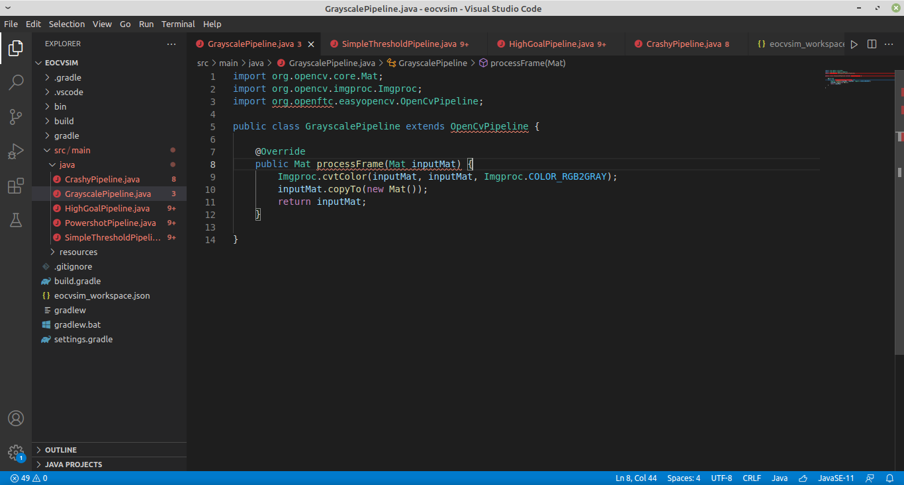
Using workspaces (without any supported IDE or text editor)
Workspaces in EOCV-Sim are very flexible, which means that you don’t need any specific IDE or text editor, you just need to provide .java files that the simulator will compile. There’s an eocvsim_workspace.json file which configures the build process, and will be explained next.
The simulator creates and selects by default a workspace in the user folder, ~/.eocvsim/default_workspace, which contains a sample GrayscalePipeline.java that is compiled and added on runtime, but you can change it by doing the following steps:
- Go under the “Pipelines” section, click the “Workspace” and finally “Select workspace”. Or alternatively, you can also go to Workspace -> Select workspace
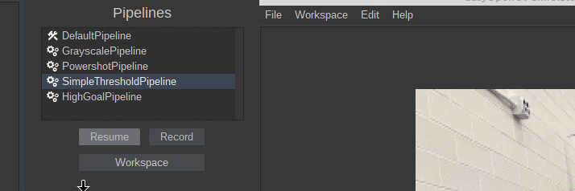
- Select a folder in the file explorer that pops up
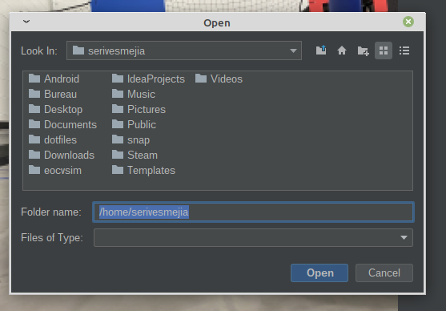
- And you are done! The sim should select the folder as a workspace, create a
eocvsim_workspace.jsonfile if it doesn’t exist in the selected folder, and build the.javafiles in the directory.
VS Code and IntelliJ IDEA
Both IntelliJ IDEA and VS Code are the IDE and Text Editor recommended to use for EOCV-Sim. While IntelliJ is a fully featured IDE specifically designed for Java, with consistent and great autocompletion, refactoring features, etc, VS Code is more lightweight and faster in computers with limited resources.
This guide will explain how to use any of these two, you can choose whichever suits you the best.
VS Code
Make sure you installed a JDK as explained in the Dowloading EOCV-Sim section.
- Download VS Code in here if you haven’t already.
- Open VS Code and install the Extension Pack for Java, going to the extensions section, search for “java” in the search box at the top and find the extension that looks like the following screenshot.
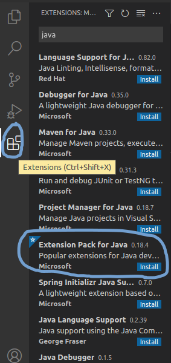
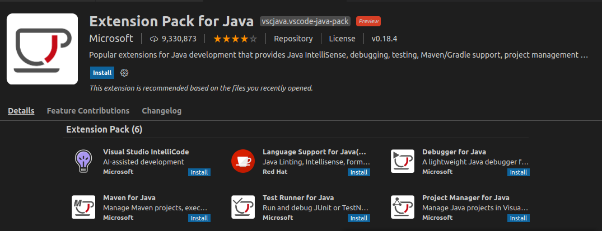
- Click on the blue “Install” button and restart VS Code.
- Do the steps specified in the Creating a Gradle workspace section
- Once you have done the steps in that section, go back to VS Code. If it wasn’t opened automatically by EOCV-Sim, open it manually and select the folder you created in EOCV-Sim.
- If the language support plugin asks to import the project on the bottom right, click on yes.
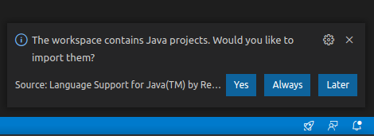
- Wait for the import process to finish; see the tiny loading icon in the bottom right.
- Pop up the
src/main/javafolder. This is where you will put your pipelines. - To create a new pipeline, right-click on the
javafolder and then choose “New File”. Give the file a name and a.javaextension (append it at the end of the name, for exampleGrayscalePipeline.java) - Copy and paste this template to have a base to create your pipeline. Replace the name of the class with the name you gave the file where it’s indicated
import org.opencv.core.Mat;
import org.opencv.imgproc.Imgproc;
import org.openftc.easyopencv.OpenCvPipeline;
public class <Name Here> extends OpenCvPipeline {
@Override
public Mat processFrame(Mat inputMat) {
// Your code here
return inputMat;
}
}
If you have EOCV-Sim opened, every time you save the file in the editor (you can use Ctrl + S) a new build will be executed. If your pipeline was compiled successfully, it will be added to the list with a “gears” icon in the list to differentiate it.
However, if the build failed, you will be presented with an output error message saying where the errors are located exactly. VS Code IntelliSense should help you with finding these issues.
Refer to the pipelines section if you want to learn more about pipelines.
IntelliJ IDEA
- Do the steps specified in the Creating a Gradle workspace section
- Open IntelliJ IDEA and import the Gradle workspace you just created:
.png)
Select the "Open" option and navigate to find your workspace folder
Alternatively, if you’re not at the starter screen of IntelliJ IDEA, you can also do the following:
.png)
Import the Gradle workspace with the "Project from Existing Sources" menu option
- Navigate through the src/main/java folders, you’ll then find the packages in which you’ll be able to start adding your own pipelines
.png)
Gradle workspace imported into IntelliJ
- Create a new Java class anywhere within the src/main/java folder. To create a pipeline, you can start with this template
import org.opencv.core.Mat;
import org.opencv.imgproc.Imgproc;
import org.openftc.easyopencv.OpenCvPipeline;
public class <Name Here> extends OpenCvPipeline {
@Override
public Mat processFrame(Mat inputMat) {
// Your code here
return inputMat;
}
}
If you have EOCV-Sim opened, every time you make a change in IntellIj a new build will be executed. If your pipeline was compiled successfully, it will be added to the list with a “gears” icon in the list to differentiate it.
Creating a Gradle workspace
- Open EOCV-Sim (follow this page if needed)
- In the top bar menu, go to Workspace -> External -> Create Gradle Workspace
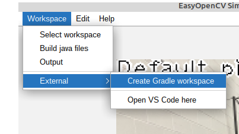
- In the file explorer, create a new empty folder or select one that already exists but has no files. You can’t use a folder that already has files in it. Click on the folder icon with a “+” in the top, and give the new folder a name.
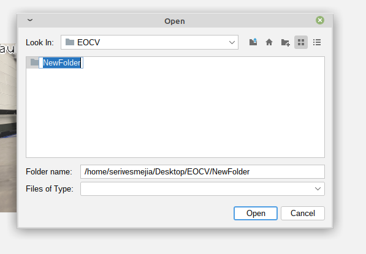
- Select the newly created folder and click on “open”.
It will pop up a dialog asking if you want to open VS Code.
- If you were following the VS Code guide, click on “Yes” once it asks if you want to open it, and go back to step #5.
- If you were following the IntelliJ IDEA guide, click on “No” and go back to step #2.
Android Studio
If you want to use EOCV-Sim with OpenCvPipelines that are already in Android Studio, that’s easily possible using the workspaces feature.
To achieve this, you need to isolate your pipeline’s source files into their own package. Since EOCV-Sim only implements a very small part of the FTC SDK, if you try to compile a class that references stuff like DcMotor, it will fail since those classes don’t exist in EOCV-Sim.
The only classes from the FTC SDK and EasyOpenCV that have been implemented are…
| Package | Classes |
|---|---|
| org.firstinspires.ftc.robotcore.external |
Telemetry (partially) Func |
| org.firstinspires.ftc.robotcore.external.function | Consumer |
| org.firstinspires.ftc.vision | * (everything) |
| com.qualcomm.robotcore.eventloop.opmode |
OpMode |
| com.qualcomm.robotcore.util |
ElapsedTime MovingStatistics Range Statistics |
| org.openftc.easyopencv |
OpenCvPipeline OpenCvTracker OpenCvTrackerApiPipeline TimestampedOpenCvPipeline |
| org.opencv | * (everything) |
This also means that, outside of OpModes, you do not need to use theOpenCvCamerarelated stuff in EOCV-Sim, inputs are simulated using Input Sources.
For example, you can have the following package structure in your Android Studio project to isolate OpenCvPipelines and load them into EOCV-Sim:
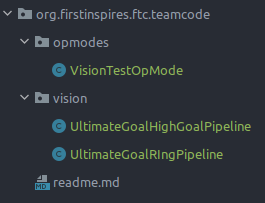
The VisionTestOpModeclass can freely use any of the FTC SDK or EasyOpenCV classes, while the classes under the visionpackage should only use the ones specified in the table before, including the whole OpenCV library of course.
Now, you will select the vision package as a workspace in EOCV-Sim. To select a workspace you can go to Workspace -> Select workspace, like in the gif shown below (both options showcased do the same thing):
To find the vision folder in the project, first locate the root folder of your FTC SDK project in the file selector, something that looks like this:
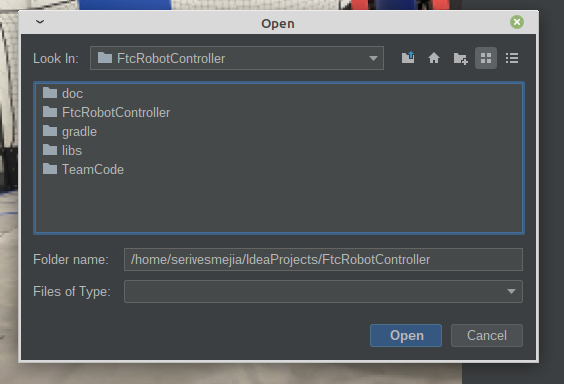
Then, navigate through the foldersTeamCode/src/main/java/org/firstinspires/ftc/teamcode and you will find the following:
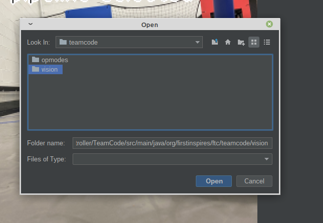
Select the vision folder and click on “Open”. The pipelines inside will be compiled in a few instants, and you will have them on the pipeline selector once it finishes successfully:
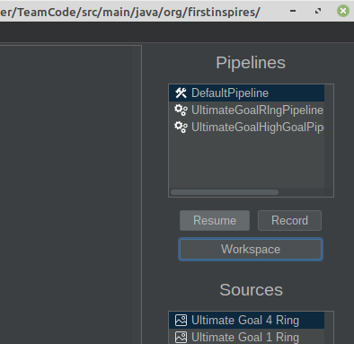
And now you are done! You will now be able to modify your pipelines from Android Studio and see the changes live. Refer to the features section to learn more about the additional features of EOCV-Sim
Input Sources
To provide more flexibility, EOCV-Sim allows feeding your pipeline with images coming from different sources. You can feed a single static image or a moving video stored on your computer’s disk, or stream frames from a webcam connected to your computer. These will be explained next.
-
Image Source:
- These will feed your pipeline with a static image loaded in your computer’s hard drive.
- To save resources, your pipeline will just run once when you select an image source, but you can optionally resume the pipeline execution by clicking the “Pause” button under the pipeline selector.
-
Camera Source:
- These will feed your pipeline with a constantly changing video stream from a specified camera plugged in your computer.
- Unlike the image sources, these will not pause the execution of you pipeline by default, but you can click the “Pause” button to pause it at any time.
-
Video Source:
- These will feed your pipeline with a constantly changing video stream from a file in your hard drive, pause rules are the same as camera sources.
- Recommended video format is *.avi, although it depends on your operating system’s support.
Variable Tuner
Basics
From EOCV-Sim v2.0.0 and going forward, there’s a variable tuner implemented into the simulator, inspired by FTC Dashboard, it allows to edit public, non-final variables from your pipeline in real time seamlessly through Java reflection.
 (1).png)
Variable tuner panel popup button (located at the bottom)
 (1).png)
DefaultPipeline blur variable
The “blur” variable simply consists of a public, non-final field declared in the DefaultPipeline, which is automatically detected and displayed by the simulator:
 (1).png)
DefaultPipeline source code
Supported Types
The tuner supports a handful of Java types, such as most primitives (int, float, double, boolean…) and some other types from OpenCV. The full list of types currently supported by the tuner on the latest version is:
Java:
- int (or Integer)
- float (or Float)
- double (or Double)
- long (or Long)
- boolean (or Boolean)
- String
- Enums
OpenCV:
- Scalar
- Rect
- Point
Sample Usage
Let’s say we need to tune a threshold for finding the ring stack in the 2020-2021 “Ultimate Goal” game. For this, we will use the YCrCb color space since it’s one of the most used ones in FTC, and it behaves better under different lightning conditions. (see this article for more extended explanation and comparing of different color spaces).
We can write a simple pipeline for achieving this, taking advantage of the variable tuner. Here’s an example code with detailed comments:
package org.firstinspires.ftc.teamcode;
import org.opencv.core.Core;
import org.opencv.core.Mat;
import org.opencv.core.Scalar;
import org.opencv.imgproc.Imgproc;
import org.openftc.easyopencv.OpenCvPipeline;
public class SimpleThresholdPipeline extends OpenCvPipeline {
/*
* These are our variables that will be
* modifiable from the variable tuner.
*
* Scalars in OpenCV are generally used to
* represent color. So our values in the
* lower and upper Scalars here represent
* the Y, Cr and Cb values respectively.
*
* YCbCr, like most color spaces, range
* from 0-255, so we default to those
* min and max values here for now, meaning
* that all pixels will be shown.
*/
public Scalar lower = new Scalar(0, 0, 0);
public Scalar upper = new Scalar(255, 255, 255);
/*
* A good practice when typing EOCV pipelines is
* declaring the Mats you will use here at the top
* of your pipeline, to reuse the same buffers every
* time. This removes the need to call mat.release()
* with every Mat you create on the processFrame method,
* and therefore, reducing the possibility of getting a
* memory leak and causing the app to crash due to an
* "Out of Memory" error.
*/
private Mat ycrcbMat = new Mat();
private Mat binaryMat = new Mat();
private Mat maskedInputMat = new Mat();
@Override
public Mat processFrame(Mat input) {
/*
* Converts our input mat from RGB to YCrCb.
* EOCV ALWAYS returns RGB mats, so you'd
* always convert from RGB to the color
* space you want to use.
*
* Takes our "input" mat as an input, and outputs
* to a separate Mat buffer "ycrcbMat"
*/
Imgproc.cvtColor(input, ycrcbMat, Imgproc.COLOR_RGB2YCrCb);
/*
* This is where our thresholding actually happens.
* Takes our "ycrcbMat" as input and outputs a "binary"
* Mat to "binaryMat" of the same size as our input.
* "Discards" all the pixels outside the bounds specified
* by the scalars above (and modifiable with EOCV-Sim's
* live variable tuner.)
*
* Binary meaning that we have either a 0 or 255 value
* for every pixel.
*
* 0 represents our pixels that were outside the bounds
* 255 represents our pixels that are inside the bounds
*/
Core.inRange(ycrcbMat, lower, upper, binaryMat);
/*
* Release the reusable Mat so that old data doesn't
* affect the next step in the current processing
*/
maskedInputMat.release();
/*
* Now, with our binary Mat, we perform a "bitwise and"
* to our input image, meaning that we will perform a mask
* which will include the pixels from our input Mat which
* are "255" in our binary Mat (meaning that they're inside
* the range) and will discard any other pixel outside the
* range (RGB 0, 0, 0. All discarded pixels will be black)
*/
Core.bitwise_and(input, input, maskedInputMat, binaryMat);
/*
* The Mat returned from this method is the
* one displayed on the viewport.
*
* To visualize our threshold, we'll return
* the "masked input mat" which shows the
* pixel from the input Mat that were inside
* the threshold range.
*/
return maskedInputMat;
}
}
And so, when initially selecting this pipeline in the simulator, its initial state should look something like this:
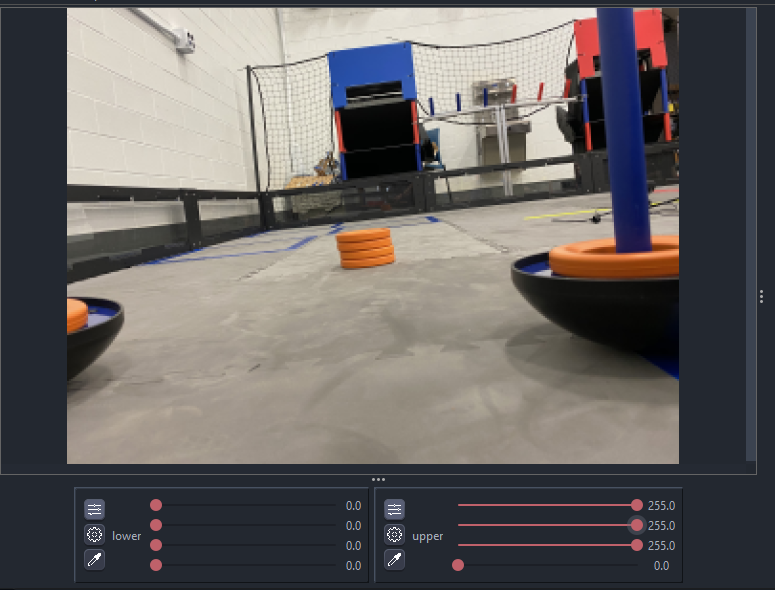
All pixels from the input Mat are entirely visible; this is because we specified a range of 0 lower and 255 upper (0-255) for all three channels (see the sliders values). Since those values are the minimum (0%) and maximum (100%) for YCrCb respectively, all pixels are able to go through our “threshold”. The last slider can be ignored since we don’t have a 4th color channel
After a bit of playing around with the sliders, it’s possible to come up with some decent values which successfully filter out the orange ring stack out of everything else:
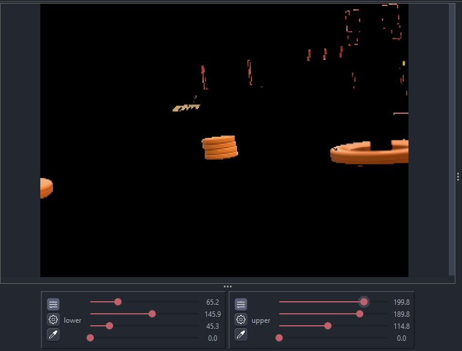
A problem with the YCrCb color space, especially this year, is that the difference between red and orange is very subtle. So we need to play with the values for a good while until we find some that filters out the red from the goals (in the image you can see there’s still red leftovers at the top right) but displays the ring stack. Or do some other technique alongside thresholding such as FTCLib’s contour ring pipeline with the “horizon” mechanism.
To keep this explanation simple, you can find the final pipeline here with some additional features, in the TeamCode module, since serves as a good sample alongside other sample classes from EOCV itself.
Telemetry
It’s sometimes useful to log data from your vision code to know the result in real time. To do this, we partially implement the basic Telemetry interface that is present in the FTC SDK (e.g methods like Telemetry#talkare not implemented) to follow the main idea of EOCV-Sim of “easily copy-pasting into an FTC SDK project”.
Telemetry in VisionProcessor
To use telemetry in a proccessor, you need to have a constructor which takes a Telemetry parameter, and save it into an instance variable within your code. This is demostrated in the following snippet:
import android.graphics.Canvas;
import org.firstinspires.ftc.robotcore.internal.camera.calibration.CameraCalibration;
import org.firstinspires.ftc.vision.VisionProcessor;
import org.opencv.core.Mat;
import org.opencv.imgproc.Imgproc;
import org.firstinspires.ftc.robotcore.external.Telemetry;
public class TelemetryProcessor implements VisionProcessor {
Telemetry telemetry;
public TelemetryProcessor(Telemetry telemetry) {
this.telemetry = telemetry;
}
@Override
public void init(int width, int height, CameraCalibration calibration) {
// Not useful in this case, but we do need to implement it either way
}
@Override
public Object processFrame(Mat input) {
telemetry.addData("[Hello]", "World!");
telemetry.update();
return null; // No need for a context object
}
@Override
public void onDrawFrame(Canvas canvas, int onscreenWidth, int onscreenHeight, float scaleBmpPxToCanvasPx, float scaleCanvasDensity, Object userContext) {
// Not useful either
}
}
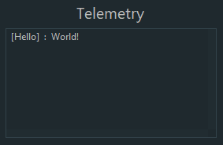
The basic idea of telemetry is to send data using the Telemetry#addData or Telemetry#addLine methods. Once you finish adding data, you call Telemetry#update in the end, to display the data and clear the past state of the telemetry so the messages that were sent in a previous call to update will not be displayed.
Telemetry in OpenCvPipeline
We’ll replicate the example from earlier as an OpenCvPipeline. The core concept remains the same, but the code structure changes a little from using a different interface;
import org.opencv.core.Mat;
import org.openftc.easyopencv.OpenCvPipeline;
import org.firstinspires.ftc.robotcore.external.Telemetry;
public class TelemetryPipeline extends OpenCvPipeline {
Telemetry telemetry;
public TelemetryPipeline(Telemetry telemetry) {
this.telemetry = telemetry;
}
@Override
public Mat processFrame(Mat input) {
telemetry.addData("[Hello]", "World!");
telemetry.update();
return input; // Return the input mat
}
}
Building from Source
Especially for the users that wish to use EOCV-Sim with Kotlin, which is a feature not currently supported with workspaces, you can instead opt to download the sim’s source code and build it after adding your own pipelines
- Make sure to have IntelliJ IDEA installed. Any IDE with Java Gradle support should work, but it is extremely recommended to use IntelliJ.
- Clone EOCV-Sim’s repository using Git, either from the command line;
git clone https://github.com/deltacv/EOCV-Sim
or using IntelliJ;
.png)
.png)
Click on "clone" after entering the URL
- After importing EOCV-Sim into IntelliJ, you can start adding your own pipelines into the “TeamCode module”. Kotlin is already configured in the project, so you don’t need to do any additional setup;
.png)
- Run EOCV-Sim using IntelliJ with the “Run Simulator” run configuration. You will need to close and run the simulator every time you make changes to your pipelines, you won’t be able to see any changes otherwise.
.png)